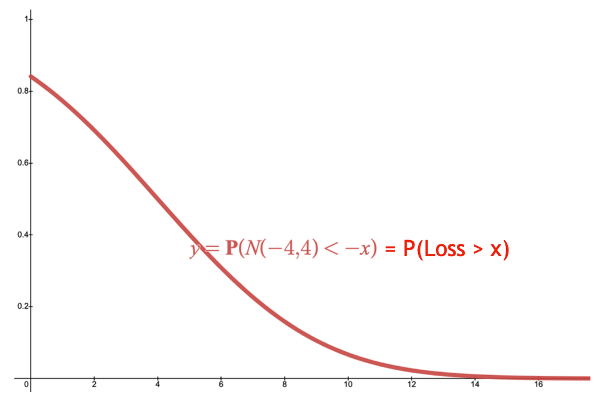
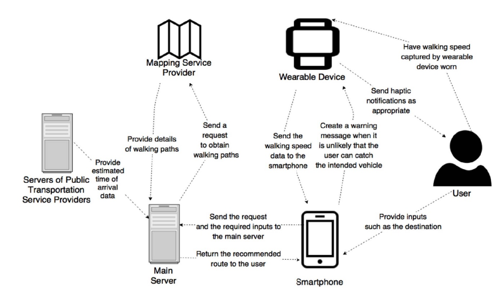

Research
Research interests
Methods: Distributionally robust optimization, integer programming, deep learning
Applications: Healthcare and operations management, location problems, public transit
Grants received
PI, “A fair simulation-optimization framework for disruption management in public transit”
Start-up Fund for RAPs under the Strategic Hiring Scheme, PolyU.
HKD 250,000, October 2022 - April 2024, P0043472.
Projects
A fair simulation-optimization framework for disruption management in public transit
(Funded by PolyU)
Unlike buses and ferries, rail transport is less flexible when there are obstructions. Lai & Leung (2018) have proposed various mathematical models which help mitigate unfavorable events occurred throughout the operation by revising the schedules in real-time. The goal of this study is to extend their framework for more realistic simulations.
 |
Objectives:
Reference(s):
|
Target-Oriented Distributionally Robust Optimization and Its Applications to Surgery Allocation
(PhD Project)
Generally speaking, chance-constrained programming seeks an optimal solution in which the requirement(s), convoluted by uncertainties arising from operations, is (are) satisfied with a certain probability. However, there are several issues when using this approach.
Once a chance-constraint is violated, there is no limit on how worse it can be. (See here for details.)
To avoid the first problem, a long list of chance-constraints can be used but the process is not scalable.
Most importantly, chance-constrained problems are difficult to optimize in general.
This project, among other things, is to address the above problems by introducing an efficient solution method. Notice that this can be easily extended to distributionally robust problems. First, denote the decision variables and the feasible set as \(\mathbf{x}\) and \(\mathcal{X}\) respectively.
Select a utility function \(u(\cdot)\) according to your risk appetite.
Define a (random) payoff function \(f(\mathbf{x}, \mathbf{\tilde{z}})\) (e.g., \(\mathbf{x}^T \mathbf{\tilde{z}}\)). We assume a positive value is preferred.
Obtain the value of \(\rho^\ast\) by solving the optimization problem defined on the right
\(\rho^\ast := \inf \{k > 0 : \mathbb{E}[u(-f(\mathbf{x}, \mathbf{\tilde{z}}) / k)] \leq 1, \mathbf{x} \in \mathcal{X} \}\). We call this a utility-based CREM.Plug \(\rho^\ast\) and \(u\) into the inequality, \(\mathbb{P}(-f(\mathbf{x}, \mathbf{\tilde{z}}) > \phi) \leq 1 / u(\phi / \rho^\ast)\), which holds for all \(\phi > 0\). Voila! This is the probability bound that holds at all loss levels (i.e., how unfavorable an outcome is) and can be thought of as an infinite list of chance-constraints!
To have a concrete idea of how reliable your optimal solution is, you can tabulate the results or plot \(1 / u(\phi / \rho^\ast)\) against \(\phi\) (see the GIF below). Consider changing \(u\) (or even \(f\) and \(\mathcal{X}\)) if you are not so happy with the results.
The graph below gives an intuitive interpretation of utility-based CREMs. The vertical axis represents the probability levels, whereas the horizontal axis indicates the loss levels. Here, we define \(u(x) = \exp(x)\). The CDF of a loss is plotted in a solid red curve.
If \(k\) is “too big” or “too small”, the probability bound (i.e., the dotted black curve) is too loose or it simply fails to hold.
So we need to find a “just right” value for \(k\) so that the black curve is “just above” the red one, or more precisely,
it is the lowest among the same family of dotted black curves and
is above the red line.
|
 |
{kind=link}
The full paper is available here and the accepted manuscript can be freely viewed here.
Utilizing Real-Time Travel Information, Mobile Applications and Wearable Devices for Smart Public Transportation
(Undergraduate Project)
This study considers an embarrassing situation faced by many commuters, especially those in Hong Kong. Suppose a bus is approaching your nearest stop but you are still on the way. The headway is so large that you must not miss the bus. What's worse, alternative routings are highly undesirable (think of any area with little to no public transit in your region to make sense of this).
To run, or not to run, that is the question.
Thanks to wearable devices, always-on connectivity, and open data, we can design a system (pictured below) to tell a commuter when it is better to give up and to find an alternative route. Though the design and the algorithm are simplistic (and naive), they can be easily extended by considering optimal stopping problems.
|
 |
{kind=link}